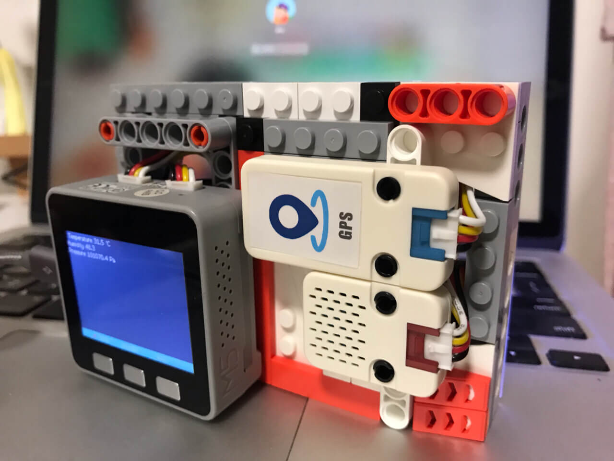
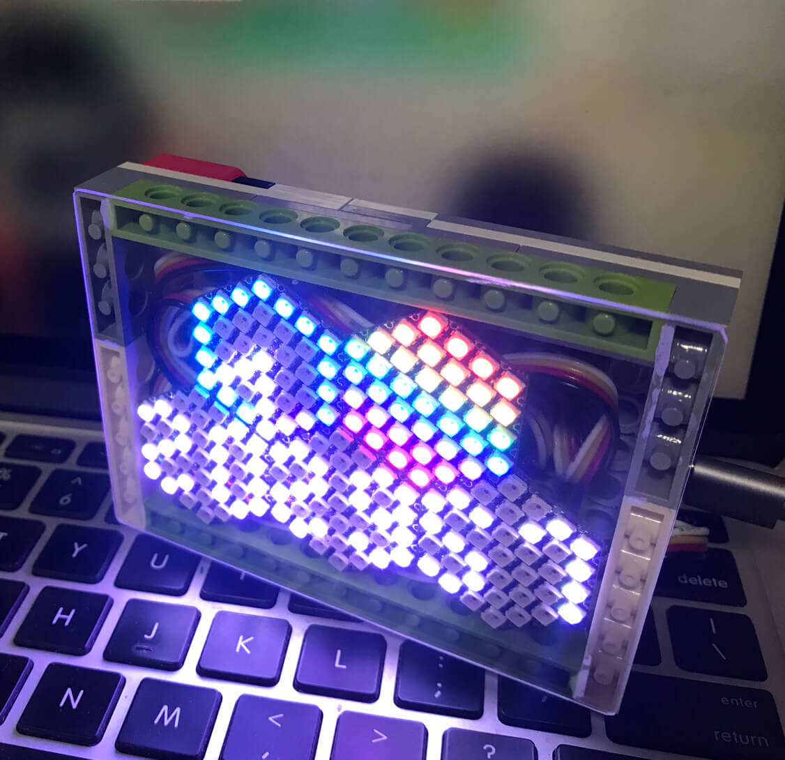

M5Stack
只是无聊而已
2019/12/8 by DKZ

介绍一个好玩的东西M5Stack。它是一个基于ESP32的开发板，有wifi和蓝牙的功能。我买了Fire和Face两款Core，和一些周边的传感器，搞了一些诸如蓝牙键盘，基于GPS点阵钟表温湿度计之类的小项目。这东西可以在arduino编辑器里用C++编程，开始的时候觉得挺好玩的，打开了新世界大门。后面陆续买了stickv和摄像头的几款，但却渐渐的不知道拿来做什么了。没什么想法。

今天发了三篇，大概是今年做的事，但并不觉得很充实。进入了一个瓶颈，没有什么要做的想做的事，整个人也有些懈怠，回到家什么都不想做，vlog也很久不录了，睡眠倒是好了许多。年底看看好像也做了一些事，学了一些东西，但我清楚那些人生中的关键的问题都没有得到回答，做这些只是惯性，只是逃避，只是无聊而已。
明年啊，明年要做些什么吧。